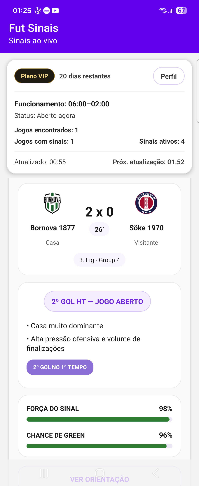
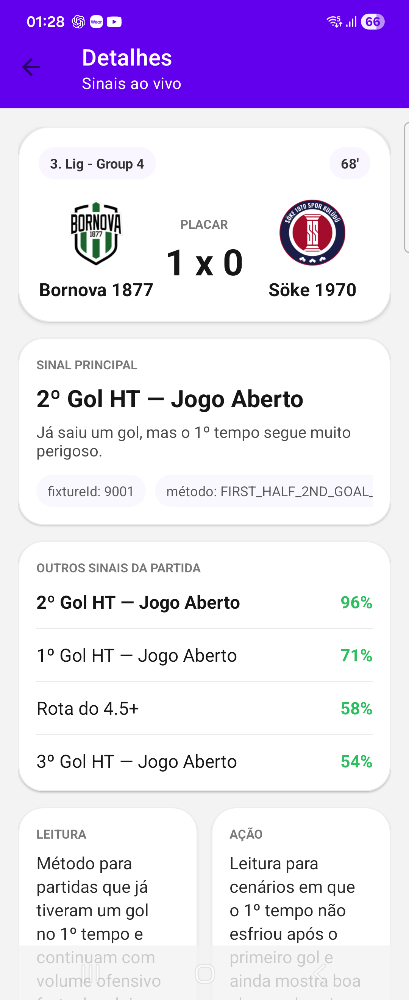

Entre no teste e instale o app do jeito certo
Faça os dois passos pelo celular Android usando a mesma conta Google da Play Store. Primeiro entre no teste pela web. Depois abra o link de instalação no Android.
Como participar
O processo é simples. Siga estes passos no seu Android para entrar no teste e instalar o app sem erro.
Abra no celular
Abra esta página no seu celular Android usando a mesma conta Google da Play Store.
Entre no teste
Toque em “Entrar no teste pelo celular” e, na página do Google Play, toque em “Become a tester”.
Instale o app
Depois volte para esta página, toque em “Instalar no Android” e finalize a instalação pela Play Store.
Depois de entrar no teste, use o link de instalação no Android para abrir a página oficial do app na Play Store.

Veja o app
Algumas telas do Fut Sinais para você reconhecer o app antes de instalar.

